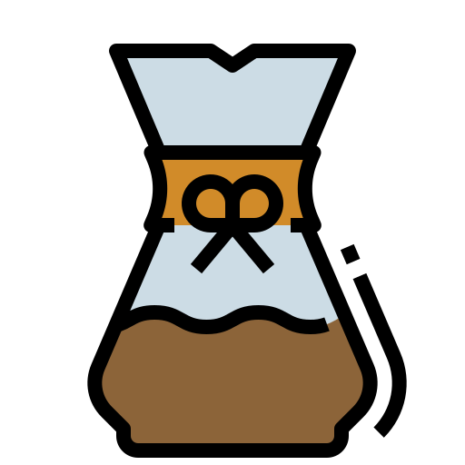

Hello.
I'm currently a Barista and University failure! Nowadays, I am spending my time in quarantine self-teaching the things I missed when I quit my education to make wet cappuccinos!
I'm Wolf.a homosexual. |
|
I'm currently a Barista and University failure! Nowadays, I am spending my time in quarantine self-teaching the things I missed when I quit my education to make wet cappuccinos!
I am currently learning basic web development, building upon skills I previously learned by studing Computer Science. So far I am confident with HTML, CSS, and know some basic JavaScript.
I am a skilled Barista and am skilled at preparing coffee a number of different ways, including espresso, v60, Chemex and traditional brew methods such as french press and cold brew. I also have a good understanding of the coffee supply chain, processing and roasting and factor these in when deciding which beans to buy and make for different brew methods!